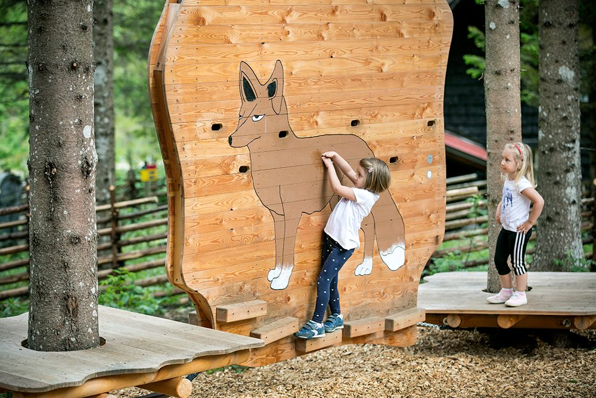
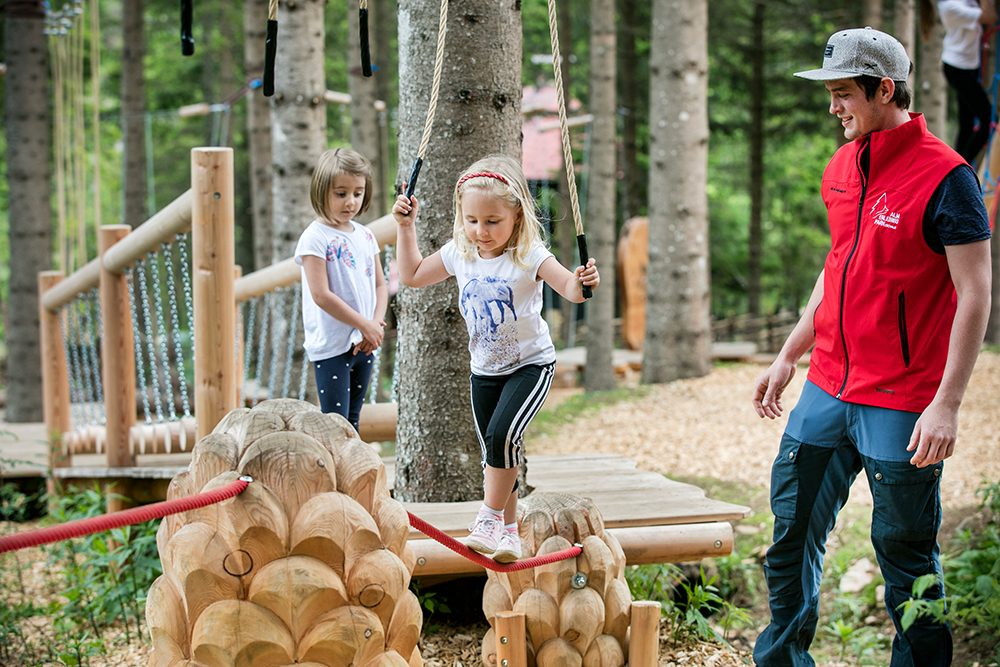
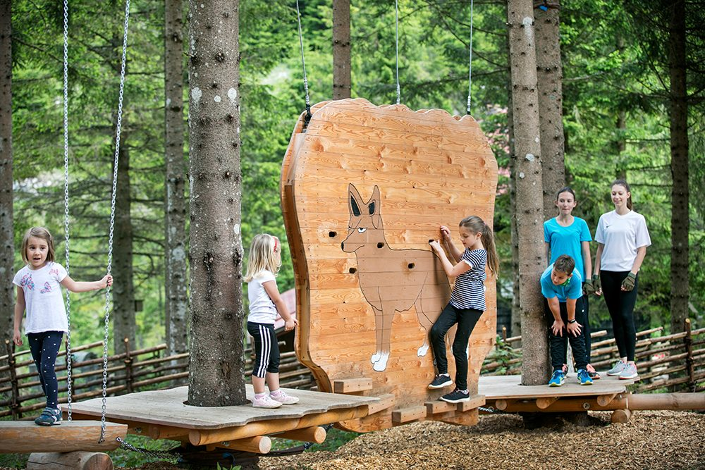
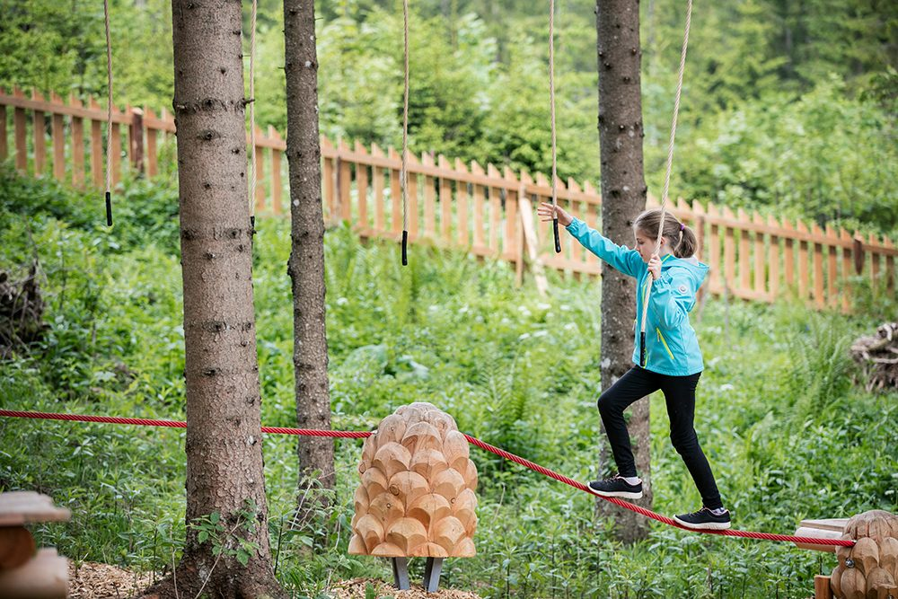
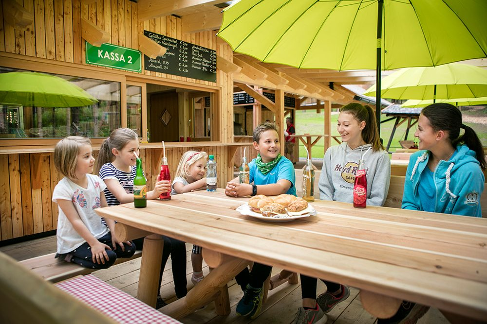

Teichalmsee
Der Park liegt nur 400 m vom Teichalmsee entfernt, direkt am Wanderweg Richtung „Guter Hirte“ und Tyrnauer Alm.
Schnell, aktiv und voller Leben – so ist der Fuchs, und so bist du! Ein „Miniklettergarten“ im Wald mit speziell entwickelten Bewegungselementen, der die motorische Förderung in der frühen Kindheit optimal unterstützt.
Freier Eintritt
Mit dem Waldbewegungsgarten für Kinder unterstützen wir auf optimale Weise die motorische Förderung in der frühen Kindheit.
Außerdem bringen wir euch das Ökosystem Wald und Alm im Naturpark Almenland näher – dem größten zusammenhängenden Almweidegebiet Mitteleuropas.





Nach einem aufregenden Tag in den Bäumen des Almerlebnisparks gibt’s eine Stärkung in unserer Jausnerei: kleine Snacks und Getränke warten auf unsere Besucherinnen und Besucher.
Eine größere Speisekarte findet sich ganz in der Nähe – in der Latschenhütte.
Bitte beachten: Der Eintritt in den Gastronomiebetrieb ist mit Klettergurt nicht gestattet.
Der Park liegt nur 400 m vom Teichalmsee entfernt, direkt am Wanderweg Richtung „Guter Hirte“ und Tyrnauer Alm.
Das größte zusammenhängende Almweidegebiet Mitteleuropas – Wald, Alm und Bewegung auf 1.200 Metern Seehöhe.
Sie wollen wissen, wie bei uns gerade das Wetter ist? Die Webcam steht direkt am Teichalmsee. Zur Webcam